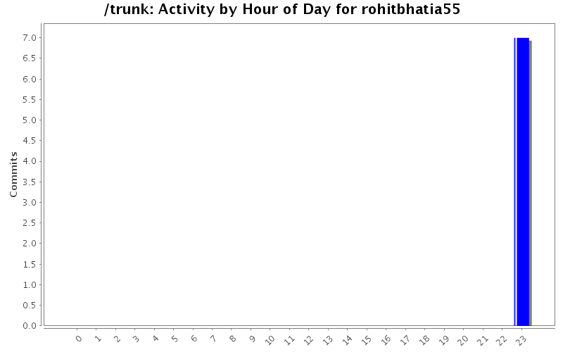
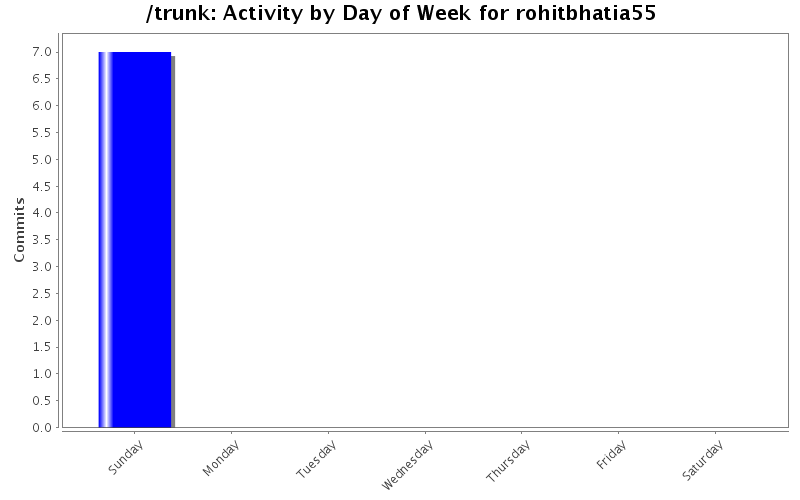
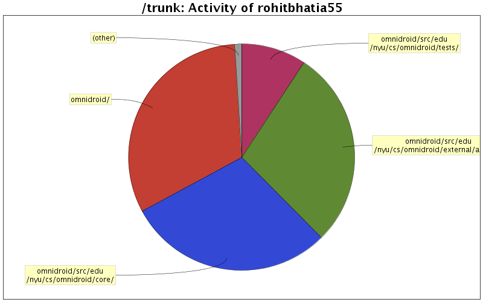

| Directory | Changes | Lines of Code | Lines per Change |
|---|---|---|---|
| Totals | 7 (100.0%) | 301 (100.0%) | 43.0 |
| omnidroid/ | 1 (14.3%) | 96 (31.9%) | 96.0 |
| omnidroid/src/edu/nyu/cs/omnidroid/core/ | 2 (28.6%) | 89 (29.6%) | 44.5 |
| omnidroid/src/edu/nyu/cs/omnidroid/external/actions/ | 1 (14.3%) | 85 (28.2%) | 85.0 |
| omnidroid/src/edu/nyu/cs/omnidroid/tests/ | 1 (14.3%) | 28 (9.3%) | 28.0 |
| omnidroid-test/ | 1 (14.3%) | 2 (0.7%) | 2.0 |
| omnidroid/src/edu/nyu/cs/omnidroid/util/ | 1 (14.3%) | 1 (0.3%) | 1.0 |

SMSCatcherTest.java deleted
2 lines of code changed in 1 file:
SendSmsAction and SMSService classes added
299 lines of code changed in 6 files: